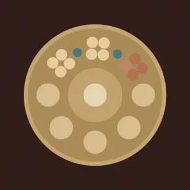

Pieces · handpan piece for D Kurd
Three three two
The handpan groove. Notes land in threes and a two, with taks between them.

- Kind
- Pieces
- Tempo
- 92 BPM
- Time signature
- 4/4
- Length
- 29 bars, about 76 seconds
- Notes used
- D3, A3, B♭3, C4, D4, E4, F4, G4, A4, C5
- Added
- 2026-10-11
Play in AlamutLearn bar by bar
About this pattern
Count the sixteenths in groups: 1 2 3, 1 2 3, 1 2. A note lands on each 1. A tak is a light tap on the shell between two note fields. It clicks and has no pitch, and it keeps the hands moving. Groove holds the bass on the ding, then B-flat, then C. Song runs a tune down from the high A on the same rhythm. Slow the tempo until the taks sit even.
Notation
Each line is one bar in 4/4. Numbers are the pan's fields, a dot is a rest, brackets hold notes struck together, and × is a tak on the shoulder. Read the number legend below.
Groove
0 . × 1 . × 6 . 0 . × 1 . × 4 .0 . × 1 . × 6 . 0 . × 8 . 6 5 .2 . × 4 . × 6 . 2 . × 4 . × 8 .3 . × 5 . × 7 . 3 . × 5 . 7 4 .
Groove
0 . × 1 . × 6 . 0 . × 1 . × 4 .0 . × 1 . × 6 . 0 . × 8 . 6 5 .2 . × 4 . × 6 . 2 . × 4 . × 8 .3 . × 5 . × 7 . 3 . × 5 . 7 4 .
Song
0 . × 8 . × 7 . 6 . × 5 . × 4 .2 . × 4 . × 6 . 8 . . . . × 6 .3 . × 7 . × 9 . 7 . × 5 . × 7 .1 . × 5 . × 8 . 5 . . . . × 1 .0 . × 8 . × 9 . 8 . × 6 . × 4 .2 . × 6 . × 8 . 9 . × 8 . × 6 .3 . × 7 . × 5 . 3 . × 5 . × 7 .0 . × 4 . × 1 . 0 . . . . . . .
Groove
0 . × 1 . × 6 . 0 . × 1 . × 4 .0 . × 1 . × 6 . 0 . × 8 . 6 5 .2 . × 4 . × 6 . 2 . × 4 . × 8 .3 . × 5 . × 7 . 3 . × 5 . 7 4 .
Song
0 . × 8 . × 7 . 6 . × 5 . × 4 .2 . × 4 . × 6 . 8 . . . . × 6 .3 . × 7 . × 9 . 7 . × 5 . × 7 .1 . × 5 . × 8 . 5 . . . . × 1 .0 . × 8 . × 9 . 8 . × 6 . × 4 .2 . × 6 . × 8 . 9 . × 8 . × 6 .3 . × 7 . × 5 . 3 . × 5 . × 7 .0 . × 4 . × 1 . 0 . . . . . . .
Close
[01] . . . . . . . . . . . . . . .
Number legend
0D3 (ding), 146.8 Hz1A3, 220.0 Hz2B♭3, 233.1 Hz3C4, 261.6 Hz4D4, 293.7 Hz5E4, 329.6 Hz6F4, 349.2 Hz7G4, 392.0 Hz8A4, 440.0 Hz9C5, 523.3 Hz×tak, a rim or shoulder tap
سه سه دو
ریتم هندپن. نتها در گروههای سه، سه و دو میافتند، با تَکها میانشان.
دولاچنگها را گروهی بشمارید: ۱ ۲ ۳، ۱ ۲ ۳، ۱ ۲. روی هر ۱ یک نت میافتد. تَک ضربهای سبک روی بدنه، بین دو خانهٔ نت است. صدای تق میدهد و نت ندارد، و دستها را در حرکت نگه میدارد. «ریتم» باس را روی دینگ، بعد سیبمل، بعد دو نگه میدارد. «ترانه» روی همان ریتم ملودیای را از لای بالا پایین میآورد. سرعت را آنقدر کم کنید که تَکها یکنواخت بنشینند.
More Pieces
Original pieces with named sections, written for this instrument.